The LAG community has been actively collaborating with famous Japanese creators to awaken the world to the unique Japanese aesthetic.
Each NFT in the LAG collection is unique with different backgrounds, hairstyles, clothing, and facial characteristics. Some are even exclusively made in collaboration with famous creators.
Longer term perks for the LAG collection include collabs with other projects, exclusive merchandise, and more.
＊The collection will be deployed on the Ethereum chain with all image data stored on IPFS.
LoveAddictedGirls
Guidelines for Derivative Fanart
Anyone (not only holders) can create LoveAddictedGirls fan art. Should you decide to
create a derivative work, please mention that it is a fanart of the LoveAddictedGirls NFT in any public
posts. Ex: use the #LAGfanart hashtag when posting on Twitter.
⚠️ Prohibited Actions
・Any forms of expression that harm the LoveAddictedGirls brand
・Wording or expressions that infringe upon the rights of others
・Content that may lead to misunderstandings around whether said content is officially affiliated with
LoveAddictedGirls
・Reuse of secondary creative works without permission of the author or secondary sales via any other
method besides NFTs
・Other acts that are judged to be socially inappropriate including but not limited to excessive or
direct sexual expressions and content that demeans specific individuals, groups, races or identities
Let’s enjoy the world of LAG together!!
Love Addicted Girls with BIGLOVE (a.k.a. LAG)
"Gals who take a bold step forwards in hopes that you'll notice them" is the vibe.
Dressed in daring and sexy outfits, watch them pose as they vie for your attention.
They're not usually like this! Their boldness is for your eyes and your eyes only.
They're enamored with you - their feelings might as well be called addictive.
Surely their LOVE will infect you too?...
0.5% of NFTs within the LAG collection are exclusive collaboration NFTs from famous creators
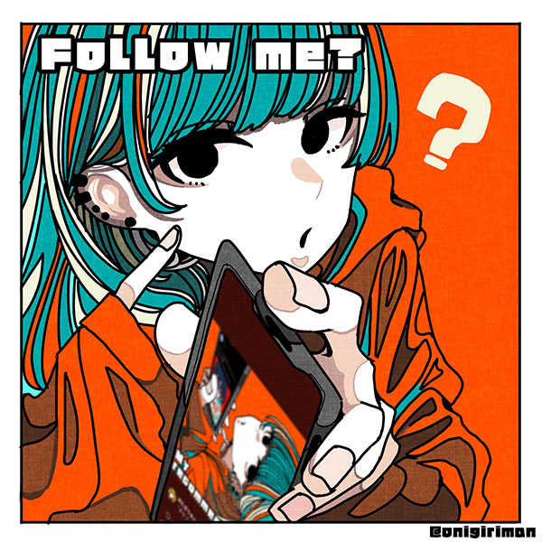
An illustrator who also works NFTs as a side hustle. A master of color and the shojo
vibe. Aficionado of "mashimashi" style works.
Twitter | OpenSea
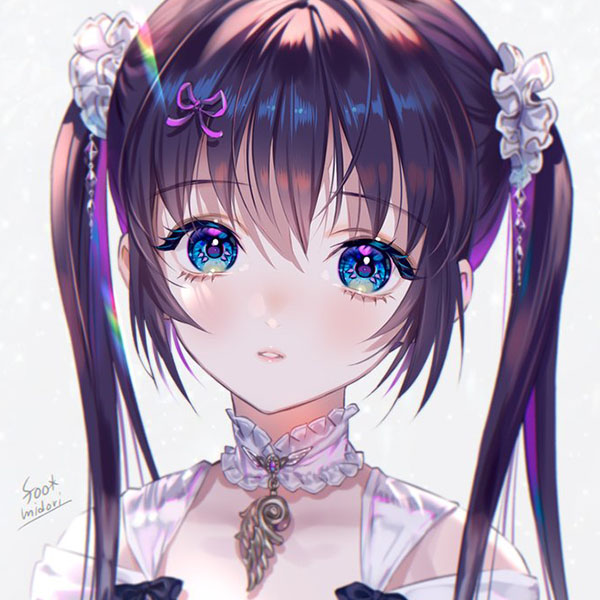
Masters degree from the Graduate School of Fine Arts, Tokyo University of the Arts.
Freelance illustrator since 2004 with a heavy focus on fantasy genres.
Twitter | Foundation
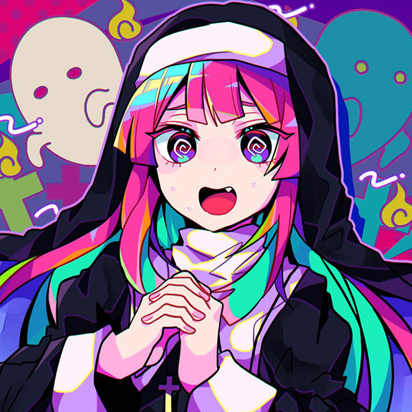
An illustrator into the simpler things in life: cute girls and straight bangs. Often uses
vivid and crisp colors to bring energy to my viewers!
Twitter | OpenSea
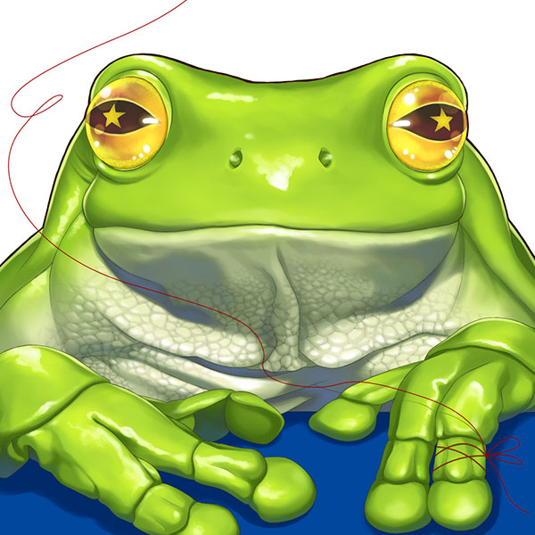
A frog who draws 🐸
Twitter | Foundation
Our collection's primary goal is to focus on the power of community growth and connect builders and creators through a Decentralized Autonomous Organization (DAO). Our DAO also plans to offer benefits for its holders.
Access to a holder-only channel, allowing communication among exclusive members. We are also planning to collaborate with external projects to develop a variety of benefits for holders (NFT airdrops, whitelisting, tokenization).
By holding NFTs from the LAG collection, you will be eligible for all upcoming NFT whitelists and also be eligible for potential airdrops.
Merchandise production is currently ongoing. Please stay tuned for future sneak peeks soon!
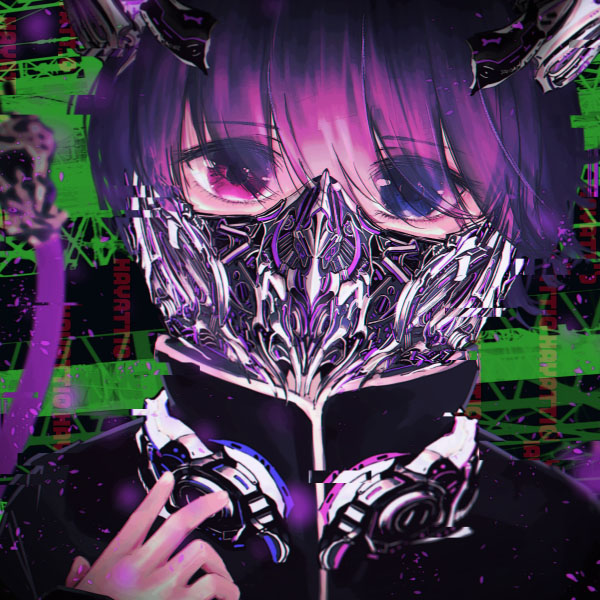
SoudanNFT Founder
Kawaii NFT collector
Investor
Twitter | SoudanNFT
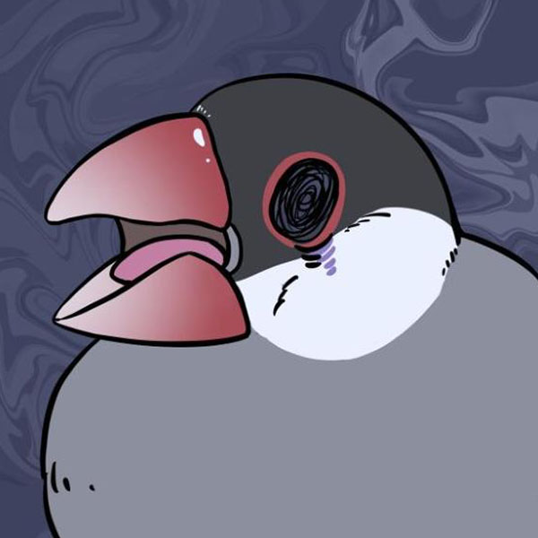
SoudanNFT Operating Member
LAG Social Media Manager
NFT collector
I love Java sparrows.
Twitter
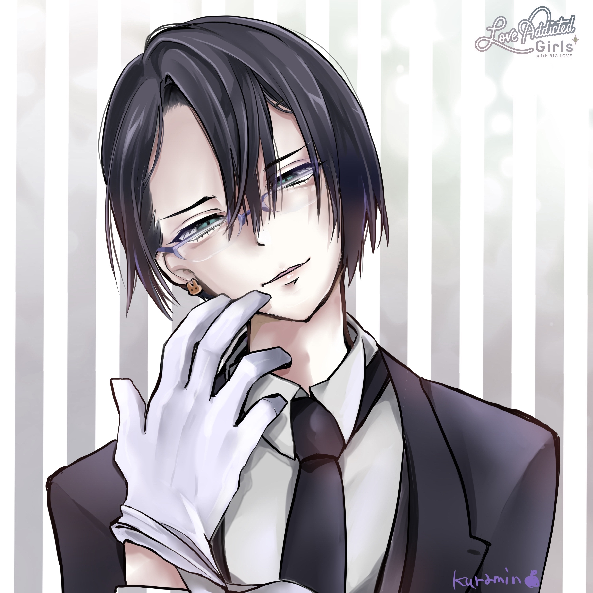
SoudanNFT Founder&Representative
LAG Founder&Representative
NFT collector.
Twitter
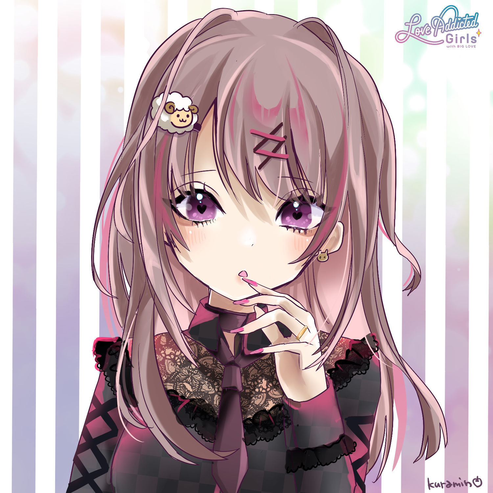
SoudanNFT Corporation Representative Director
LAG Lead Designer
Twitter | OpenSea | Foundation
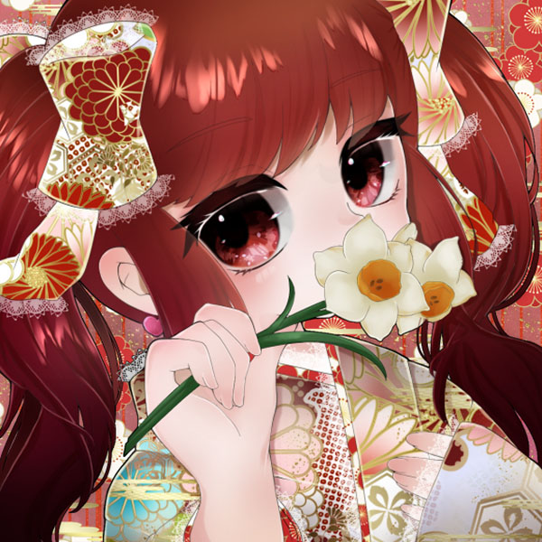
LAG Designer
Responsible for clothing and frame design
Soudan NFT Mascot Character Designer
I love pretty girls and meat done rare.
Twitter | OpenSea
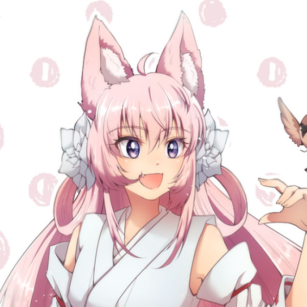
LAG Designer
Responsible for body and clothing design
NFT artist
I like mofumofu.
Twitter | OpenSea
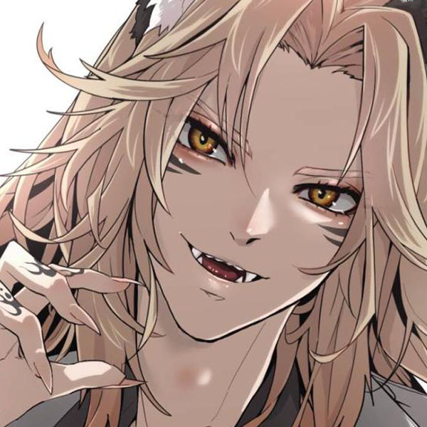
LAG Designer
Quality checks and corrections
NFT artist
I like aesthetic men.
Twitter | OpenSea
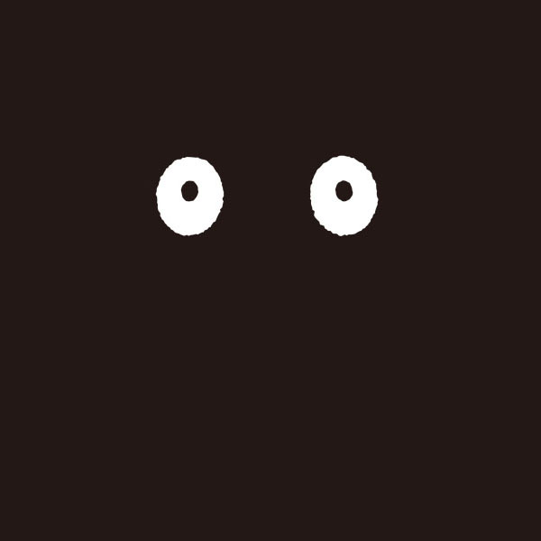
LAG Designer
Responsible for logo and art direction
Founder of the mysterious project MOOGIE
Twitter | OpenSea
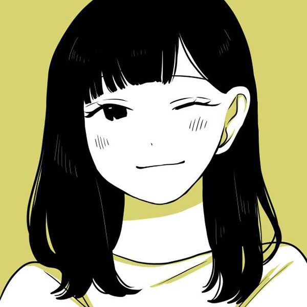
SoudanNFT Management
Responsible for audience and social media support
NFT collector (based on love)
Twitter
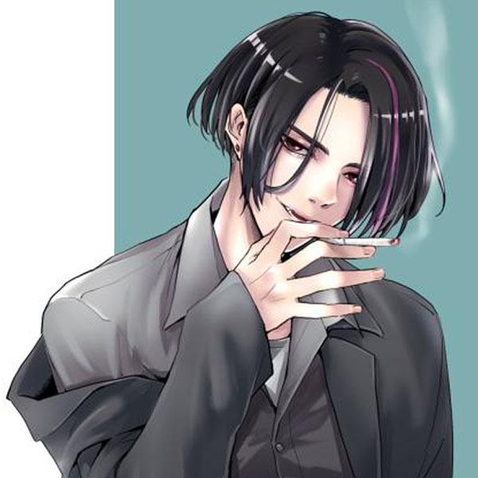
SoudanNFT Management
Responsible for audience and social media support
Booty lover (Kisenosato and friends)
Twitter
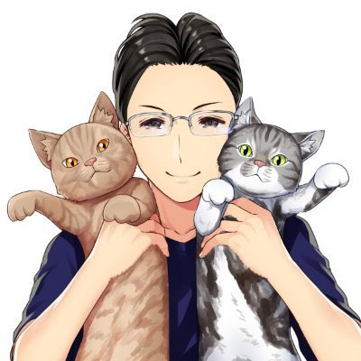
Solidity developer
Web3 developer
Twitter
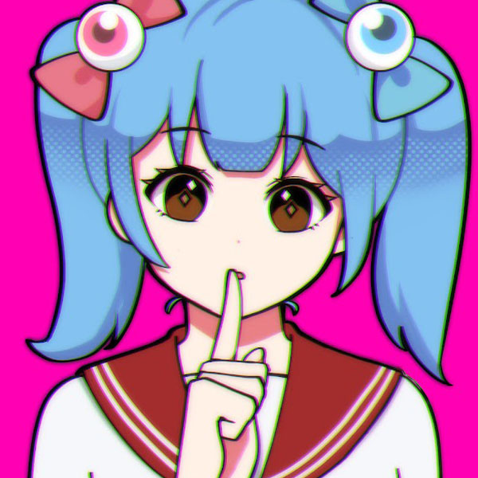
SoudanNFT Thai Community Manager
Thai NFT artist
Creator of the "To The Sky | Shhh!" Collection
Twitter | OpenSea
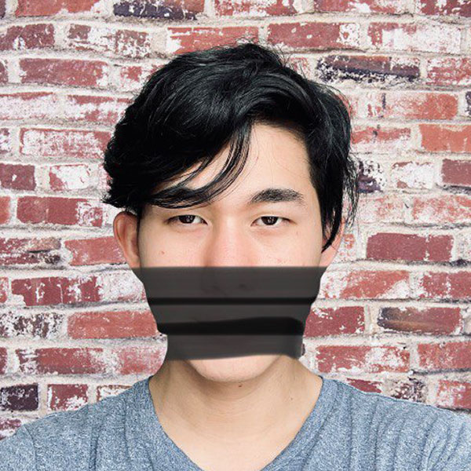
Community builder from Stacks since 2019, co-founder of Zensite, a UI/UX design agency.
Managed several DeFi communities. Current Community Lead at ALEX DeFi.
Twitter
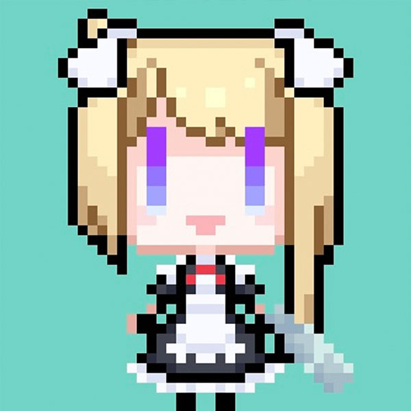
10k NFT project featuring maid cyborg pixel art that involves creating a derivative
doujin NFT IP
Scheduled for mint during Spring 2022
Twitter | Discord
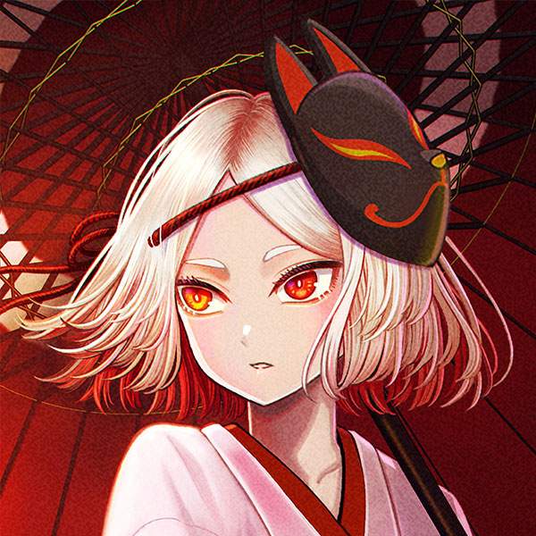
Background illustrator
I draw nostalgic landscapes and characters.
Twitter | Foundation
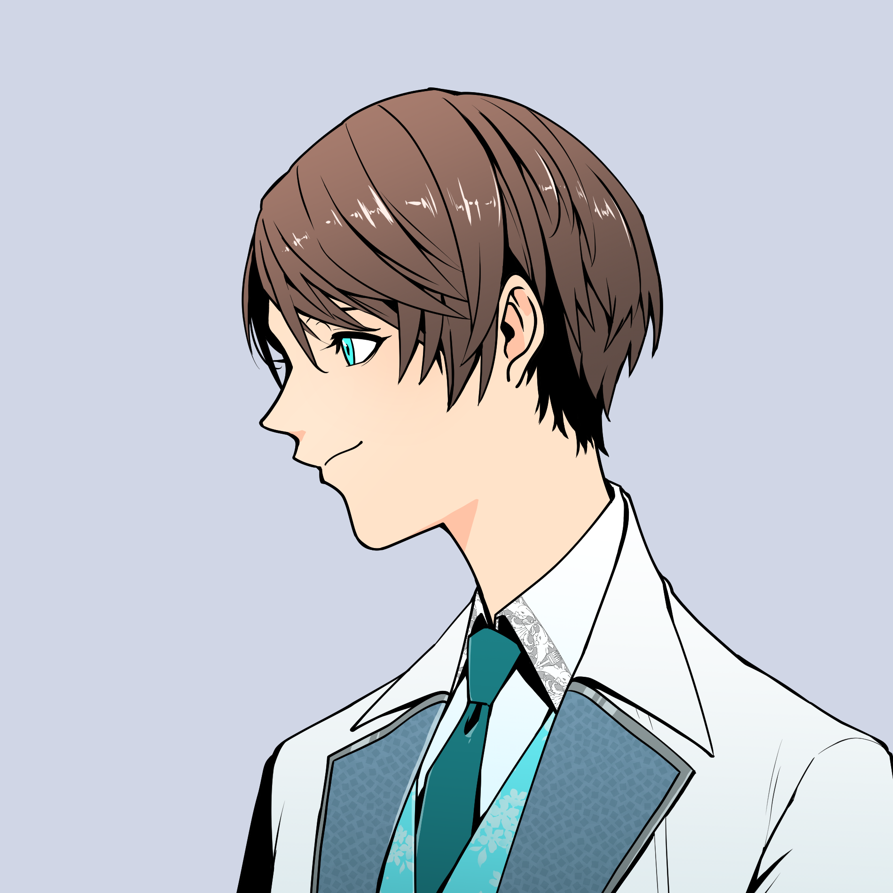
SoudanNFT Operating Member
developer
I like Internet Computer and its NFT.
Twitter
© SoudanNFT